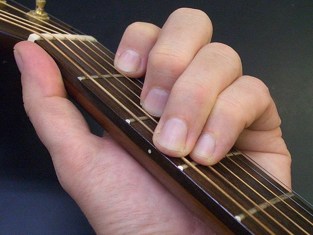
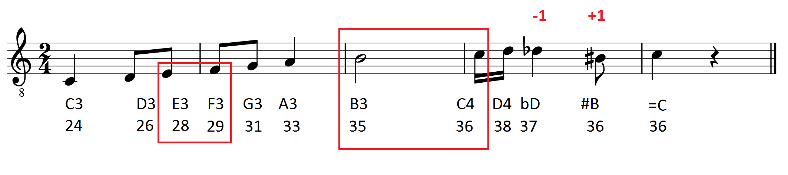

|
Films have music, and the soundtrack from our favourite film uses only guitars. We'd like to play the sheet music for this film.
Determine the optimal order of hand movements to play this sheet music on a guitar, using the least amount of energy possible. |  |
In the western 12 tone system, the following notes (12 "semitones") exist in a single octave:
<<- C C# D D# E F F# G G# A A# B ->>
equivalent to:
<<- C Db D Eb E F Gb G Ab A Bb B ->>
Meaning that, in the sheet music system, C# (C sharp) is the same semitone as Db (D flat). The 12 tones then repeat for higher notes (octaves). The first (lowest) set is C1, C#1, D1 etc; then an octave higher, C2, C#2, D2 and so on. We numbered these notes, calling C1 -> 0, C2 -> 12, Db2 == C#2 -> 13, E2 -> 16, etc.

Guitars have six strings. Each string has a base note ("keynote"). It plays this note if you pick it without holding down a fret. Frets are the regularly placed ribs along the guitar's neck. Holding down each fret shifts the played note by a semitone. Frets are numbered from the tuning nut upward (the end of the neck, opposite from the guitar's body), starting from fret 1. "0" means no fret is held down.
You can hold down up to 4 strings simultaneously (using 4 fingers). From the base position of the hand, fingers may be shifted by up to 2 frets (offset: 0..2).
Initially, the hand is positioned over fret 1. It costs 5 units of energy to move the hand by one fret distance.
Additionally, for each played chord, holding down fingers cost energy:
The standard tuning of the guitar is: E2 A2 D3 G3 B3 E4, from the lowest sounding string to the highest. (The strings are tuned a 5 semitones apart, with the exception of the G and B-strings.) You can adjust the tuning of the guitar to achieve optimal play.
16 21 26 31 35 40This stands for the default E2 A2 D3 G3 B3 E4.
One line for each chord should follow, with 7 numbers. The first number is the hand position, the following six numbers are for the six strings. For example:
1 -1 0 -1 1 -1 -1The hand position is given as a fret index, starting with 1. For each string, the possible values are:
Example input0.png | Example output16 21 26 31 35 40 1 -1 3 -1 -1 -1 -1 2 -1 -1 -1 0 3 -1 |